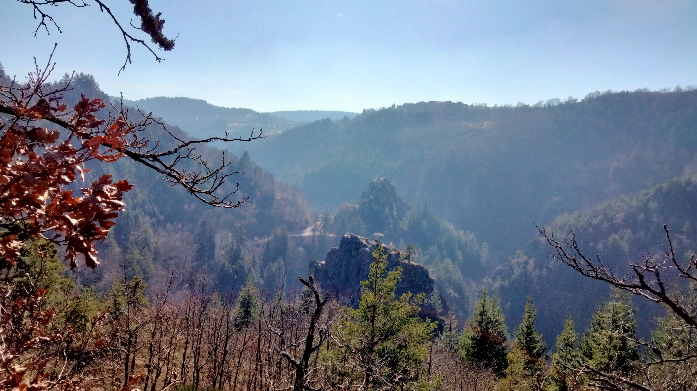
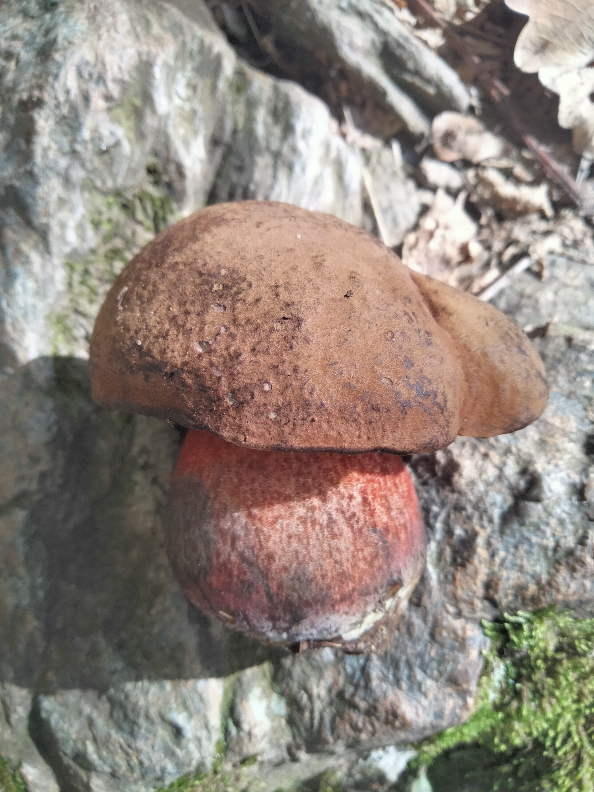
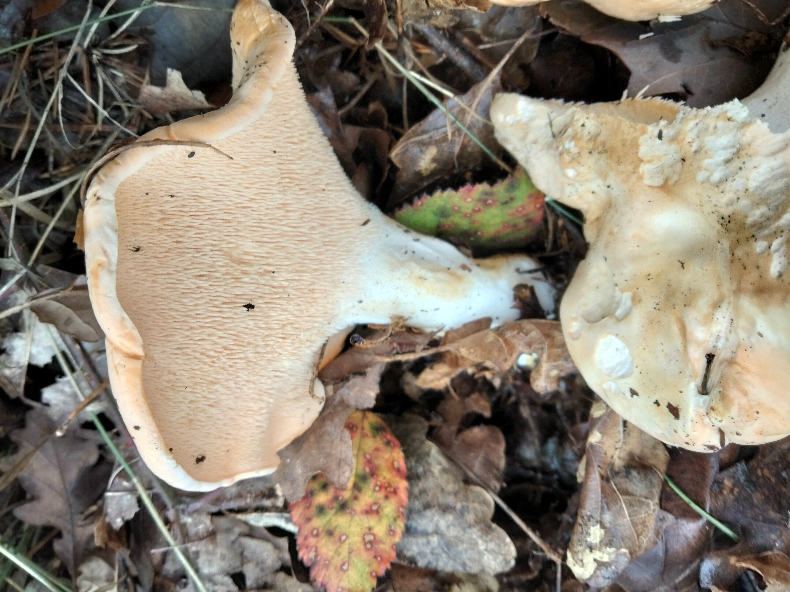
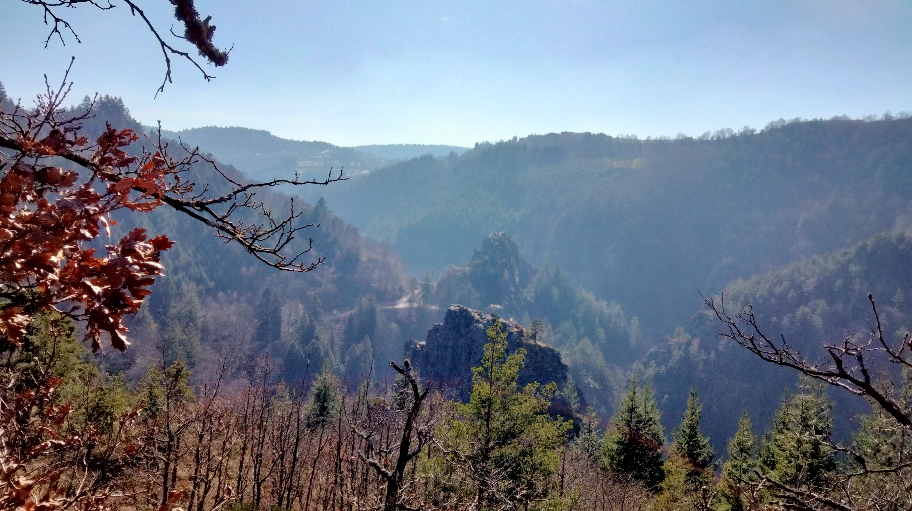
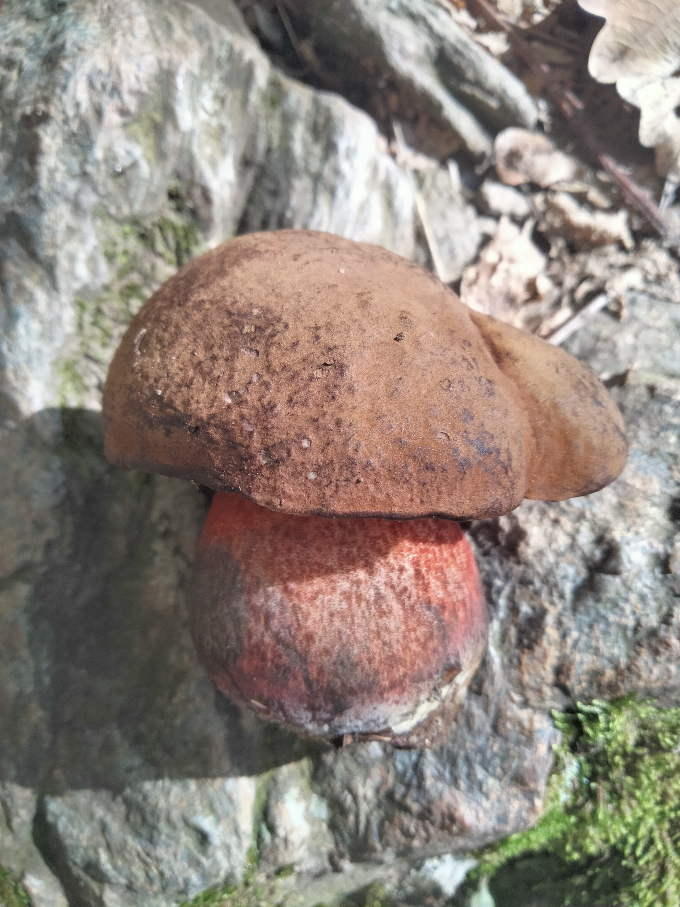
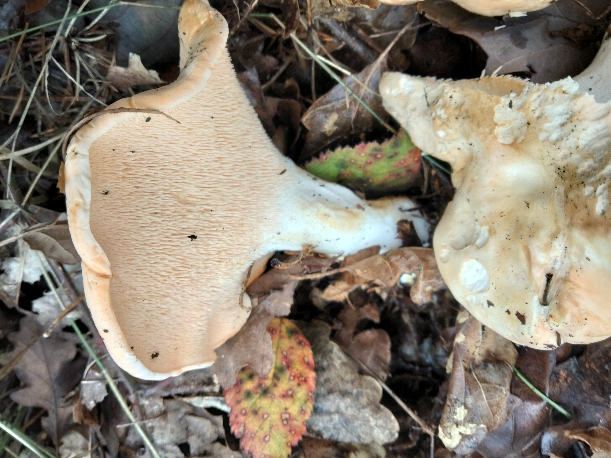
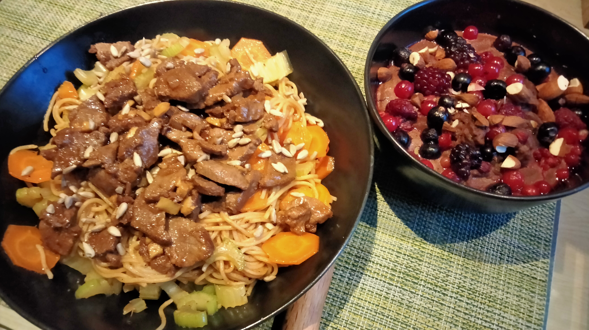
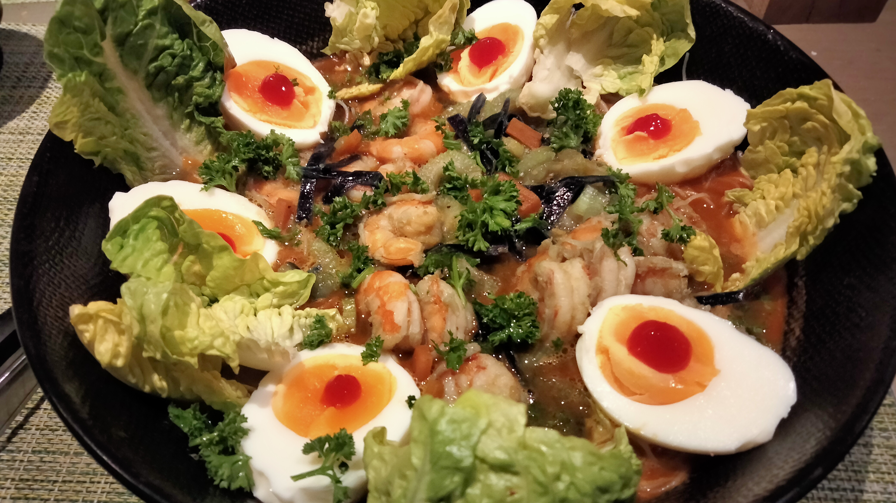
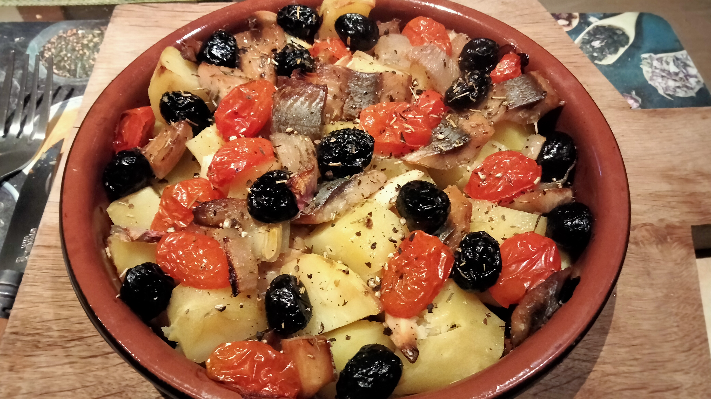
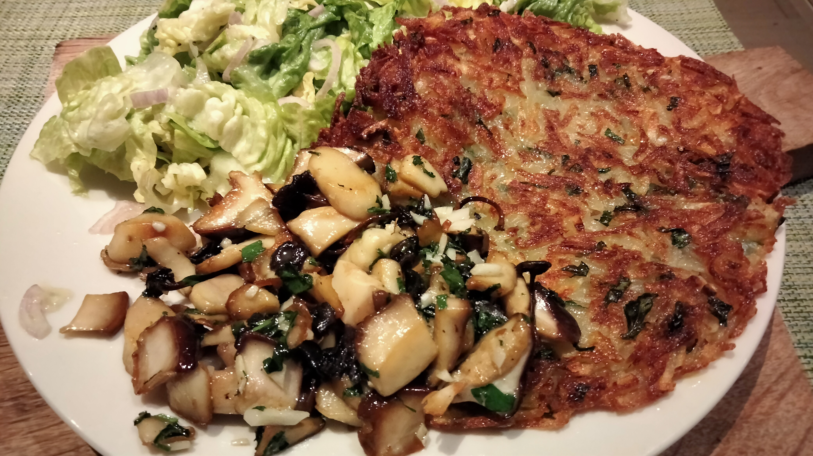

Mes hobbies
La randonnée 🏔️
Des que j'ai un peu de temps, je sors marcher, pour le sport, pour les paysages mais aussi a la fin de l'eté et l'automne dans les bois pour la ceuillette des Girolles et des Cêpes

 






La muscu 💪
Depuis peu j'ai pris conscience que mon corps avance dans le temps et qu'il faut que je l'entretienne, je me suis découvert depuis 2 ans une passion pour la muscu que je pratique pour l'instant chez moi et lorsqu'il fait beau dans des parcs de street workout
Exercices a l'exterieur
- tractions
- Dips
- Abdos suspendus
- ...
Exercices à l'interieur
- Barres parallèles / calisthenie
- Bench (développé couché / incliné)
- Squats / fentes / SDT
- Legs extension / leg curl
- curl bibi
- Elevations frontales / latérales / oiseau
- Extension triceps
- Exercices a l'elastique
Influenceurs sportifs
- Bazinga
- Nassim Sahili
- Essan NFC
- Corona Gym
J'integre a mon training pour cet année la course a pied, dans les chemins , afin d'allier ma passion pour l'exterieur et la nature avec le sport, un objectif pour l'uatomne ou l'année prochaine : m'inscrire a un trail 10Km ????? 😝
Manger ! (et cuisiner par la même occasion)
Je vous laisse juste avec une petite bibliothèque d'images pour illustrer
   